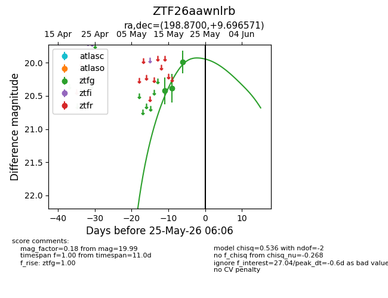
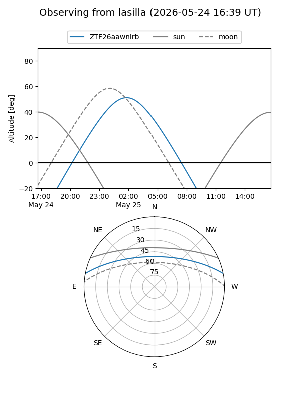
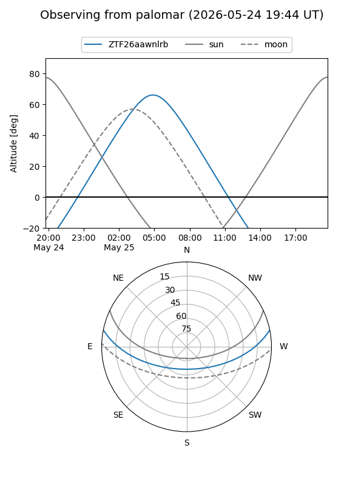
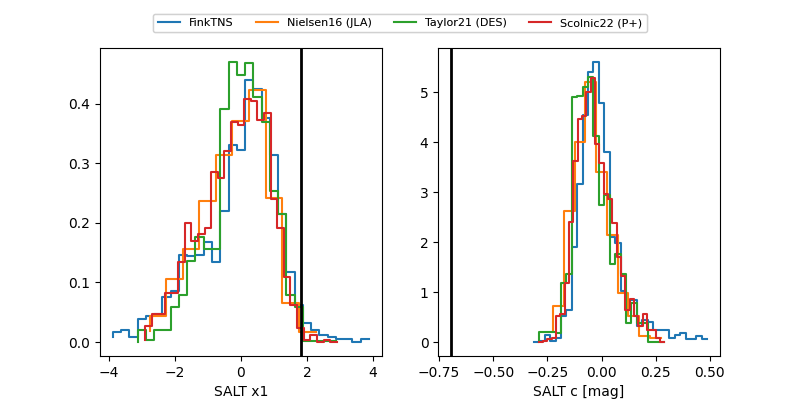

ZTF26aawnlrb
Target ZTF26aawnlrb at 2026-05-25 06:07
Aliases and brokers:
lsst-FINK: link
lsst-Lasair: link
lsst-ALeRCE: link
ztf-FINK: link
ztf-Lasair: link
ztf-ALeRCE: link
alt names
ZTF26aawnlrb (ztf,fink_ztf)
Coordinates:
equatorial (ra, dec) = 198.8700,+9.69657
equatorial (HMS+DMS) = 13:15:28.81,+09:41:47.65
galactic (l, b) = (322.0899,+71.66839)
Flags:
Photometry:
last ztfg=19.99
3 ztfg detections
Lightcurve

Visibility


Additional plots
